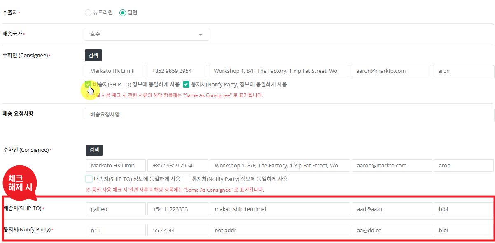
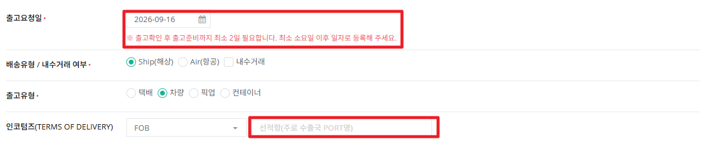
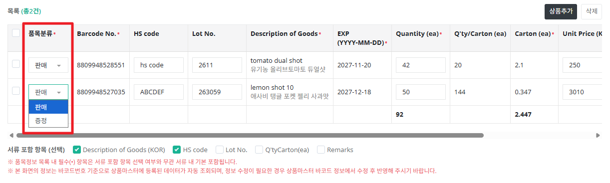
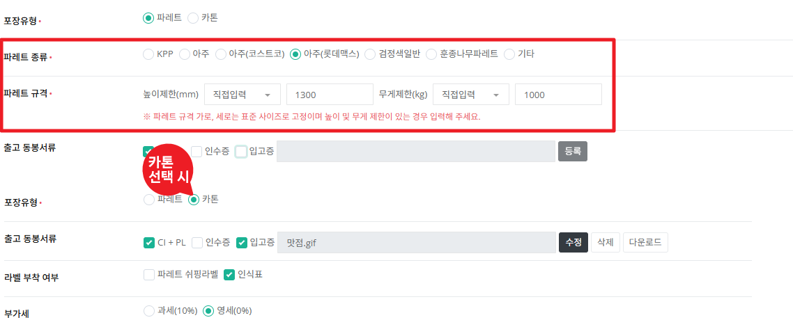
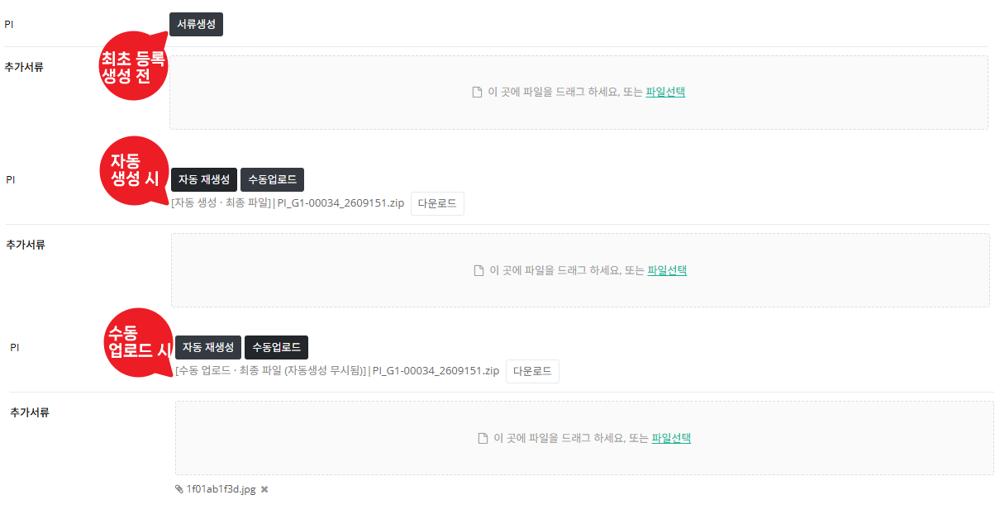

거래처가 사이트에서 접수했거나 관리자가 직접 등록한 견적 건을 검토하여 승인 또는 거절하고, 최종적으로 주문확정까지 진행하는 화면입니다.
견적은 누가 등록했는지에 따라 시작 상태가 다릅니다.
어느 단계에서든 거절되면 아래 상태로 종료되며, 거절 이후에는 내용 수정과 주문확정이 불가능합니다.
기본은 최근 1주일 접수 건만 보입니다. 과거 건을 찾으려면 기간을 "전체"로 바꾸고 검색하세요. 목록의 인보이스번호(견적/주문번호)를 클릭하면 상세 화면으로 이동하고, 관리자가 직접 등록하려면 목록 상단의 견적등록 버튼을 누릅니다. (등록 화면도 상세 화면과 탭 구성이 동일합니다.)
| 견적/주문 유형 | 견적 : 정식 판매를 위한 건 / 샘플 : 판매 목적이 아니라 소량(몇 개)만 보내는 건 |
|---|---|
| 견적/주문 방식 | 거래처 접수 : 고객사가 고객 사이트(front)에서 직접 접수한 건 (front 오픈 이후부터 발생) / 관리자 등록 : 관리자가 이 화면에서 직접 등록한 건 |
| 견적/주문 상태 |
접수 : 거래처가 접수해 관리자 검토를 기다리는 상태 관리자검토 : 관리자가 승인·거절을 검토 중인 상태 거래처검토 : 관리자 승인 후 거래처의 최종 확인을 기다리는 상태 (관리자 등록 건은 등록과 동시에 이 상태로 시작) 주문확정 : 거래처가 승인하여 주문으로 전환된 상태 관리자거절 / 거래처거절 : 각 검토 단계에서 거절되어 종료된 상태 접수취소 : 거래처가 접수를 취소한 상태 |
| 통화(등록 시) | KRW / USD / EUR 중 필수 단일 선택. 이후 모든 금액·주문단위가 이 통화 기준으로 고정되므로 등록 전 신중히 선택하세요. |
상세 화면은 6개 영역(기본정보 / 수출자·수입자 정보 / 출고·운송 정보 / 품목 정보 / 포장·가격 정보 / 서류 정보)으로 구성되며, 상단 탭을 클릭하면 해당 영역으로 화면이 자동으로 이동합니다. PO번호·PO파일은 거래처가 등록한 경우 수정 불가(값만 확인 가능)하며, 관리자가 등록한 경우에만 주문확정 전까지 수정할 수 있습니다.



| 품목분류 | 판매 / 증정 전환 가능. 증정으로 바꾸면 개당판매가가 0원으로 고정되고, 서류의 품목별 Remarks 항목에 "FOC"로 자동 표기됩니다. 이는 관리자 화면에 표시되는 것이 아니라 서류 생성 시 자동으로 붙는 문구이며, 관리자 화면에서 Remarks를 직접 입력한 경우에는 서류에 "FOC / (입력한 Remarks 값)" 형태로 함께 표기됩니다. |
|---|---|
| Carton (ea) | 주문수량 ÷ 카톤당 입수로 자동 계산됩니다. 나누어떨어지지 않으면 "이대로 진행하시겠습니까?" 확인 팝업이 뜹니다. |

포장유형을 "카톤"으로 바꾸면 파레트 종류·규격 등 파레트 관련 입력란이 화면에서 사라져 불필요한 항목을 등록하지 않아도 됩니다.
최종 결제금액은 부가세 설정에 따라 달라집니다. 영세는 부가세가 0원이라 금액에 영향이 없고, 과세는 부가세 10%가 계산되어 합산된 금액이 최종 결제금액이 됩니다.

| 자동 생성 | 기본정보·품목정보 등 화면에 이미 입력된 값을 기준으로 서류가 자동 생성됩니다. |
|---|---|
| 수동 업로드 | 필요한 경우 직접 작성한 서류 파일을 업로드할 수 있으며, 이때는 업로드한 파일이 최종 서류 내용이 됩니다. 엑셀 파일만 업로드 가능합니다. |
| 제공 형식 | 생성된 서류는 엑셀(xlsx), PDF 두 가지 형식으로 함께 제공됩니다. |
| 추가서류 | 선택 입력 항목입니다. 필요한 경우에만 등록하면 되며, 등록하지 않아도 견적·주문 진행에는 문제가 없습니다. |
버튼은 오직 현재 견적 상태에 따라서만 나타나거나 사라집니다 (담당 팀에 따른 제한은 없습니다).
| 등록 화면 |
등록
아직 저장 전 신규 작성 화면으로, 등록 버튼만 노출됩니다.
|
|---|---|
| 접수 상태 |
견적취소관리자거절관리자승인저장
|
| 접수취소 / 관리자거절 / 거래처거절 상태 | 버튼이 노출되지 않습니다. 이미 거절 또는 취소로 종료된 건이라 조회만 가능합니다. |
| 관리자검토 상태 |
견적취소관리자거절관리자승인저장
아직 승인·거절을 누르지 않은 상태로, 관리자거절 또는 관리자승인을 눌러 다음 단계로 이동할 수 있습니다.
관리자승인 클릭 시 → 상태가 "거래처검토"로 바뀌며 거래처에 견적 내용이 공개됩니다.
|
| 거래처검토 상태 |
거래처거절주문확정저장
아직 승인·거절을 누르지 않은 상태로, 거래처거절 또는 주문확정을 눌러 다음 단계로 이동할 수 있습니다.
주문확정 클릭 시 → 견적은 종료되고 주문상세 형태로 등록되어 주문상세 화면으로 연결됩니다.
|